3.3 밴디트 알고리즘
그림 03-3 마법의 입체 Epsilon 주사위를 쥐고서 보물 지도의 최적 길(Greedy)과 주사위 굴리기(Exploration) 사이에서 저울질하는 도로시와 지니
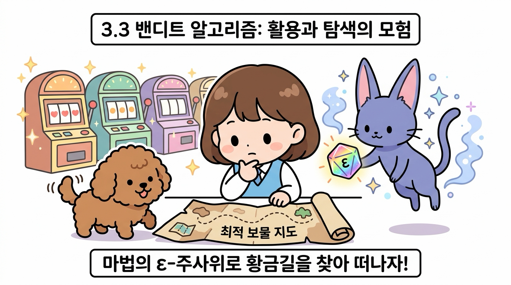
가장 우수한 결과를 내는 기계를 위주로 선택하는 활용(Exploitation)과, 더 나은 당첨 확률을 가진 기계가 숨어있을까 봐 새로운 행동을 도전해보는 탐색(Exploration)의 적절한 조화법을 알아봅니다. 지니가 선물해준 마법의 엡실론($\epsilon$) 주사위를 굴리며 최적 보물 길을 그려나가는 엡실론-그리디 알고리즘의 비결을 3.3장에서 정복해봅시다!
밴디트 문제에서 플레이어는 슬롯머신의 ‘가치(보상 기댓값)’를 알 수 없습니다.
이 상황에서 가치가 가장 큰 슬롯머신을 선택해야 하죠. 따라서 플레이어는 실제로 슬롯머신을 플레이하고 그 결과를 토대로 자신의 선택이 얼마나 훌륭했는지 혹은 나빴는지를 추정해야 합니다. 지금까지의 내용을 정리하면 다음과 같습니다.
• 만약 각 슬롯머신의 가치(보상 기댓값)를 알면 플레이어는 가장 좋은 슬롯머신을 고를 수 있다. • 그러나 플레이어는 각 슬롯머신의 가치를 알 수 없다. • 따라서 플레이어는 각 슬롯머신의 가치를 (가능한 한 정확하게) 추정해야 한다.
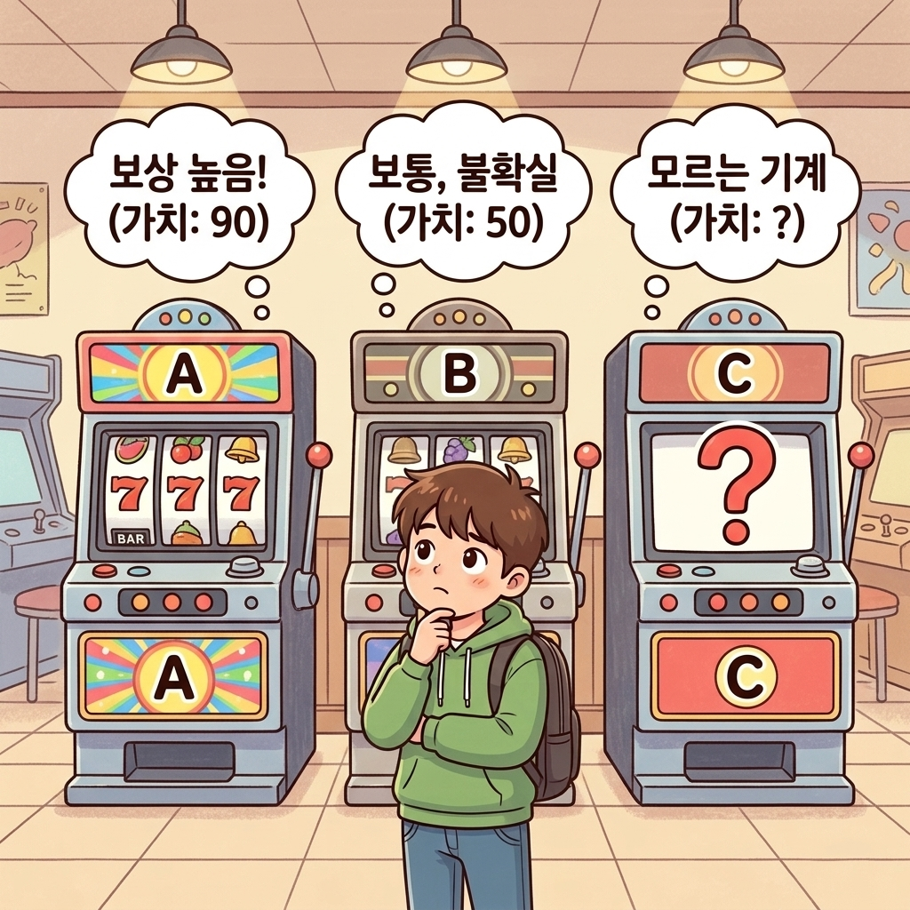
이러한 조건에서 코인을 가장 많이 얻을 수 있는 전략이 필요합니다.
NOTE_ 지도 학습에서는 문제의 정답이 준비되어 있습니다. 따라서 학습 중인 모델의 예측이 어긋나더라도 정답은 알 수 있습니다. 강화 학습 관점에서 풀어보면 잘못된 행동을 하더라도 ‘올바른 행동은 이것이다’라는 정답을 얻을 수 있다는 뜻입니다. 하지만 실제 강화 학습에서의 플레이어는 행동에 대한 결과(보상)만을 얻습니다. 예를 들어 어떤 슬롯머신을 플레이한 후 코인 1개를 얻었다고 해보죠. 이때 코인 1개라는 값은 하나의 단서일 뿐입니다. 정답이 무엇인지, 최선의 행동이 무엇인지는 이 보상을 단서로 삼아 플레이어 스스로 추론하고 판단해야 합니다.
그럼 지금부터 슬롯머신의 가치를 추정하는 방법을 구체적인 예를 들어 알아보겠습니다.
3.3.1 가치 추정의 원리
슬롯머신의 실제 가치는 알 수 없기 때문에, 우리는 여러 번 플레이하여 얻은 실제 보상의 평균치(표본 평균)를 이용해 기계의 가치를 추정합니다.
3.3.1 왜 진짜 가치를 두고 ‘추정’할 수밖에 없을까요?
강화 학습에서 우리가 궁극적으로 알고 싶어 하는 것은 슬롯머신(행동)의 ‘진짜 가치(보상 기댓값)’입니다. 하지만 플레이어는 이를 직접 관찰할 수 없으며, 오직 실제로 손잡이를 당겨서 튀어나오는 일시적인 보상(코인 개수)만을 볼 수 있습니다.
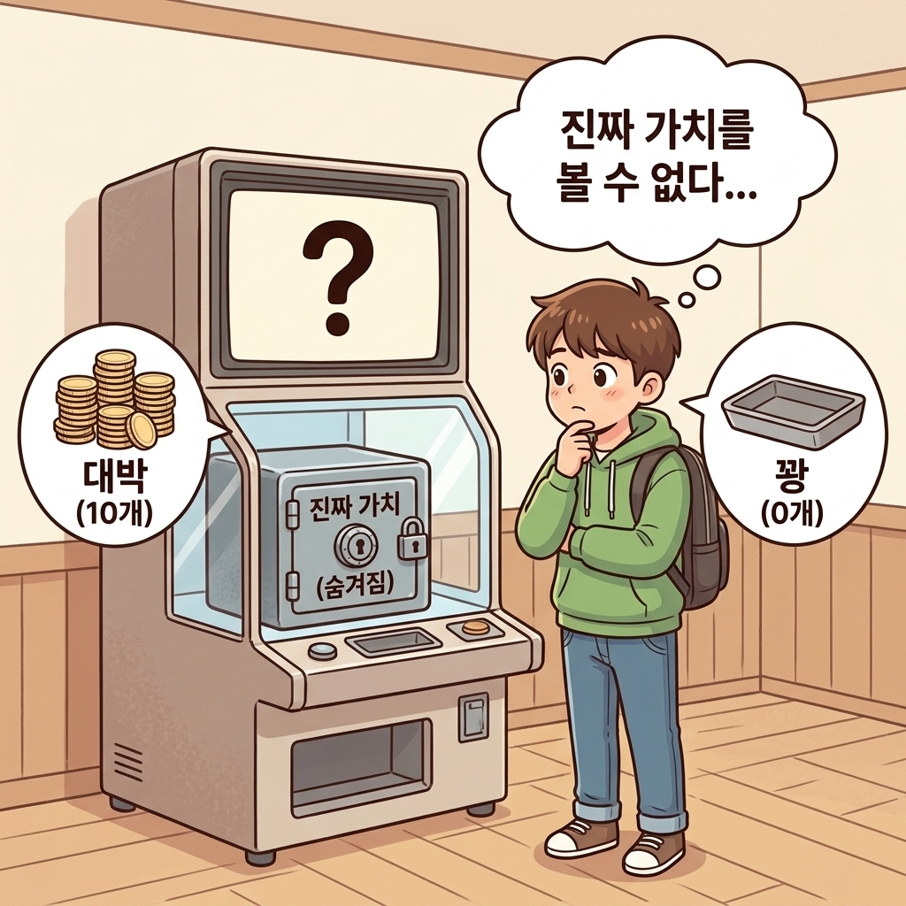
이것이 바로 가치를 ‘추정’할 수밖에 없는 이유이며, 그 본질적인 한계는 다음과 같습니다.
-
기계의 내부는 ‘블랙박스’입니다:
- 기계 내부에 프로그래밍되어 있는 진짜 평균 승률(예: 참 가치 = 1.0)은 두껍게 닫힌 강철 금고 속에 비밀번호로 잠겨 있는 것처럼 들여다볼 수 없습니다.
-
보상은 매 판 운에 의해 요동칩니다 (확률적 요인):
- 참 가치가 1.0인 아주 좋은 슬롯머신이라도 어떤 판에는 대박(10개)이 나고, 어떤 판에는 꽝(0개)이 납니다. 단 한두 번 당겨서 나온 단편적인 결과만으로는 기계의 진짜 참모습을 판단할 수 없습니다.
따라서 플레이어는 “직접 볼 수 없는 진짜 가치를 추정”할 수밖에 없습니다.
3.3.2 플레이 횟수를 최대한 늘려야 하는 이유 (큰 수의 법칙)
우리가 슬롯머신을 한두 번만 당기고 멈추면 안 되고, 가능한 한 많이 플레이해야 하는 이유는 통계학의 ‘큰 수의 법칙’ 때문입니다.
-
동전 던지기 비유:
- 앞면이 나올 확률이 정확히 50%인 동전이 있습니다. 만약 동전을 딱 2번 던졌는데 우연히 둘 다 앞면이 나왔다면, 이 동전의 앞면 확률은 100%일까요? 당연히 아닙니다.
- 하지만 동전을 1,000번, 10,000번 던진다면 앞면이 나온 비율은 50%에 아주 가까워집니다.
-
노이즈의 상쇄:
- 슬롯머신도 마찬가지입니다. 단 몇 번만 플레이했을 때는 우연(행운이나 불운)이라는 ‘노이즈(Noise)’가 추정값을 왜곡시킵니다.
- 그러나 플레이 횟수(n)를 늘리면 늘릴수록, 가끔 터지는 대박과 가끔 겪는 꽝의 일시적 변동이 서로 상쇄되면서 평균값은 결국 기계 본연의 진짜 가치(기댓값)로 수렴하게 됩니다.
그림 3-11 참 가치와 가치 추정치의 차이 및 큰 수의 법칙
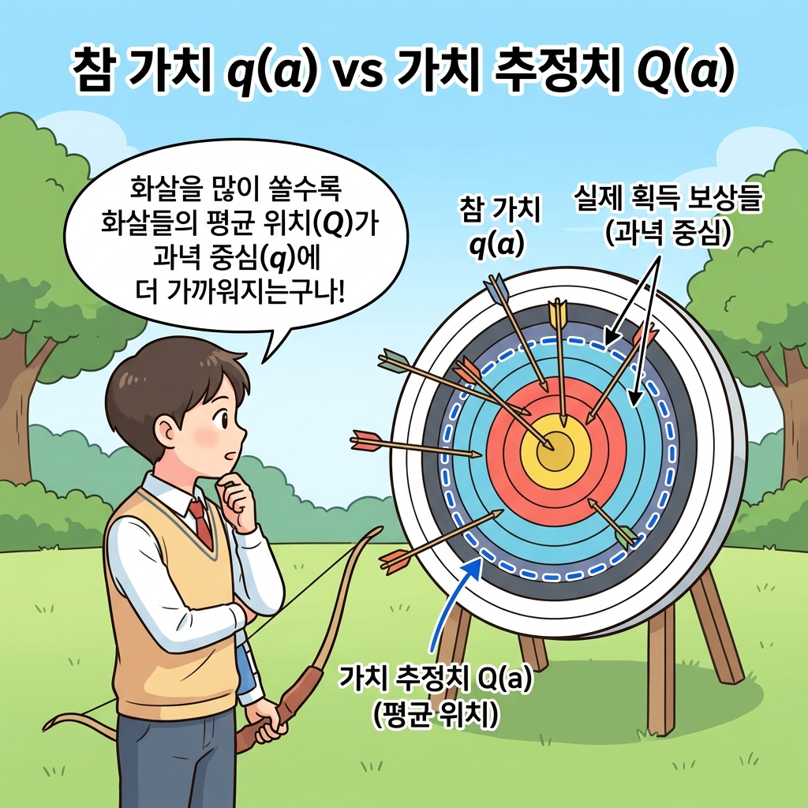
NOTE_ 슬롯머신을 실제로 플레이하여 얻은 보상은 어떤 확률 분포에서 생성된 ‘샘플(표본)’입니다. 따라서 실제 획득한 보상의 평균을 표본 평균sample mean이라고 할 수 있습니다. 표본 평균은 샘플링 횟수가 늘어날수록 실제값(보상의 기댓값)에 가까워집니다. 큰 수의 법칙law of large numbers에 따라 샘플 수를 무한대로 늘리면 표본 평균은 실제값과 같아집니다.
3.3.2 표본 평균 구하기 구현
이제 표본 평균을 구하는 수식을 알아보고, 이를 파이썬 코드로 어떻게 효율적으로 구현하는지 단계별로 살펴보겠습니다.
3.3.3.1 단순 표본 평균 구현
이번에는 슬롯머신 한 대에만 집중하여 총 n번 플레이하는 경우를 생각해봅시다.
3.3.3.1 단순 표본 평균의 수식 정의
어떤 하나의 행동만을 n번 수행할 때의 행동 가치를 추정하는 것입니다.
이때 실제로 얻은 보상을 R1, R2, …, Rn이라 하면 n번 행동했을 때의 행동 가치 추정치 Qn은 다음 수식으로 표현할 수 있습니다. \(Q_n = \frac{R_1 + R_2 + \dots + R_n}{n}\) [식 3.1]
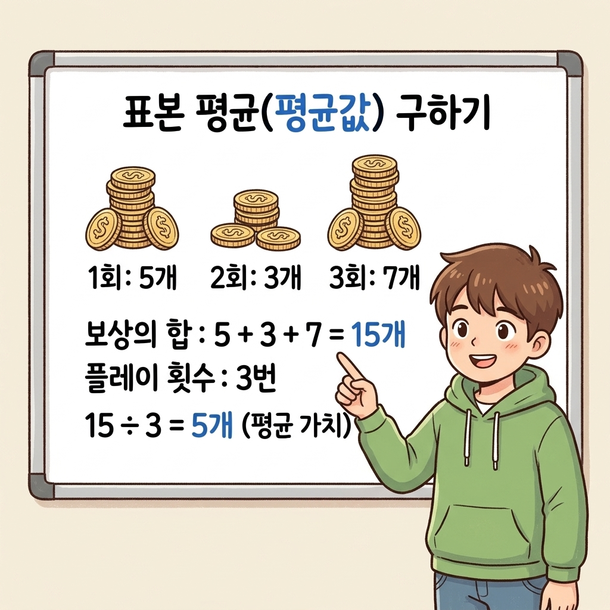
이처럼 n번째 행동 가치 추정치 Qn은 n개의 보상에 대한 표본 평균으로 구할 수 있습니다.
3.3.3.2 파이썬 단순 구현 코드
표본 평균을 구하는 [식 3.1]을 파이썬 코드로 구현해보죠.
보상을 10번 연속으로 얻는 경우를 가정하고 보상을 얻을 때마다 추정치를 구하기로 합시다.
단순히 전체 리스트를 보관하여 구현한 코드는 다음과 같습니다.
(전체 코드는 같은 디렉터리의 avg.py 파일에서도 확인 및 직접 실행이 가능합니다.)
import numpy as np
np.random.seed(0) # 시드 고정
rewards = []
for n in range(1, 11): # 10번 플레이
reward = np.random.rand() # 보상(무작위 수로 시뮬레이션)
rewards.append(reward)
Q = sum(rewards) / n
print(Q)
출력 결과
0.5488135039273248
0.6320014351498722
...
0.6157662833145425
0.0 이상 1.0 미만의 무작위 수를 만들어 보상으로 활용했습니다.
그리고 얻은 보상을 리스트인 rewards에 추가합니다. 그러면 [식 3.1]의 계산을 그대로 구현할 수 있습니다.
3.3.3.3 단순 구현의 메모리 및 계산량 한계
물론 이 코드로도 표본 평균을 제대로 구할 수 있지만 아직 개선할 부분이 있습니다.
플레이 횟수(n)가 늘어날수록 rewards의 원소 수도 늘어나며, 이어서 n개의 합을 구하는 sum(rewards) 코드의 실행 비용도 함께 증가합니다.
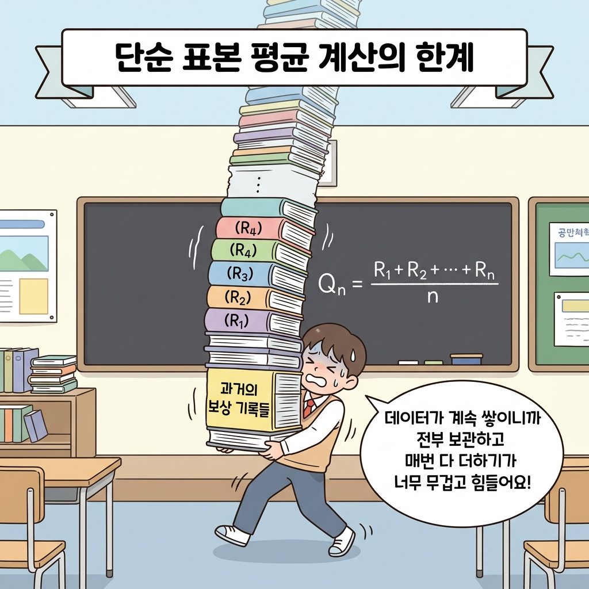
즉, 플레이 횟수가 늘어날수록 메모리와 계산량이 모두 크게 증가합니다.
3.3.3.2 증분 수식(Incremental Formula) 유도
표본 평균 계산을 더 효율적으로 구현하려면 어떻게 해야 할까요?
매번 과거의 모든 보상 데이터를 다시 더하는 고비용 연산을 피하기 위해, 이전 단계의 가치 추정치(Qn-1)와 새로 얻은 보상(Rn)만을 사용하여 새로운 가치 추정치(Qn)를 점진적으로 갱신하는 ‘증분 공식(Incremental Formula)’을 유도해보겠습니다.
다음 그림은 수식이 도출되는 과정을 단계별로 나타낸 흐름도입니다.
그림 3-12 증분 공식 유도의 단계별 흐름
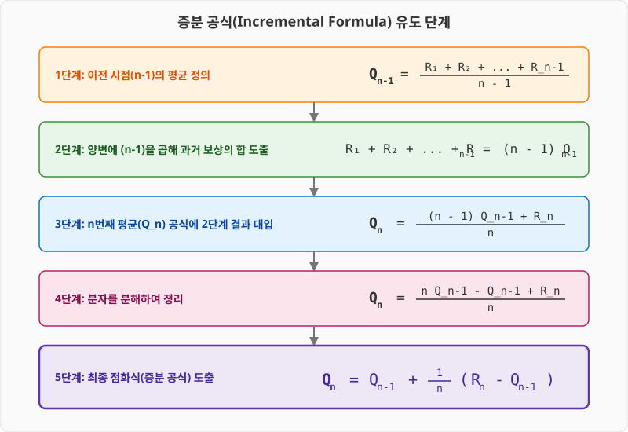
이제 수식 유도 과정을 한 단계씩 살펴보겠습니다.
먼저 사전 준비로 n - 1번째 시점의 행동 가치 추정치인 Qn-1에 주목해보죠. Qn-1의 수식은 다음과 같습니다. \(Q_{n-1} = \frac{R_1 + R_2 + \dots + R_{n-1}}{n-1}\)
이 식의 양변에 n - 1을 곱하고 좌우 변을 바꾸면 다음 식이 얻어집니다.
\(R_1 + R_2 + \dots + R_{n-1} = (n-1)Q_{n-1}\) [식 3.2]
그리고 Qn은 다음처럼 표현할 수 있습니다.
\[Q_n = \frac{R_1 + R_2 + \dots + R_n}{n}\]\(= \frac{1}{n}(R_1 + \dots + R_{n-1} + R_n)\) [식 3.3] \(= \frac{1}{n}\{(n-1)Q_{n-1} + R_n\}\)
\(= (1 - \frac{1}{n})Q_{n-1} + \frac{1}{n}R_n\) [식 3.4]
여기서 핵심은 [식 3.3]에서 [식 3.2]를 대입하는 부분입니다.
그러면 [식 3.4]와 같이 Qn과 Qn-1의 관계가 도출됩니다. 최종적으로 [식 3.4]를 보면 Qn-1, Rn, n의 값만 알면 Qn을 구할 수 있습니다.
즉, 지금까지 얻은 모든 보상(R1, R2, …, Rn-1)을 매번 사용하지 않고도 계산할 수 있습니다!
이어서 [식 3.4]를 조금 더 변형해봅시다.
\(Q_n = (1 - \frac{1}{n})Q_{n-1} + \frac{1}{n}R_n\) [식 3.4] \(= Q_{n-1} + \frac{1}{n}(R_n - Q_{n-1})\) [식 3.5]
[식 3.5]에서 주목할 점은 형태가 Qn = Qn-1 + … 라는 것입니다.
다시 말해 Qn은 Qn-1에 어떤 값을 더해 구할 수 있습니다. Qn-1을 기준으로 우변의 두 번째 항인 1/n( Rn - Qn-1 ) 만큼 갱신되죠.
이 증분 공식의 구조를 블록 형태로 시각화하면 다음과 같습니다.
이 구조는 강화 학습 알고리즘 전체를 꿰뚫는 가장 중요한 뼈대이므로 확실히 기억해두는 것이 좋습니다.
그림 3-13 증분식(Incremental Equation)의 개념 구조
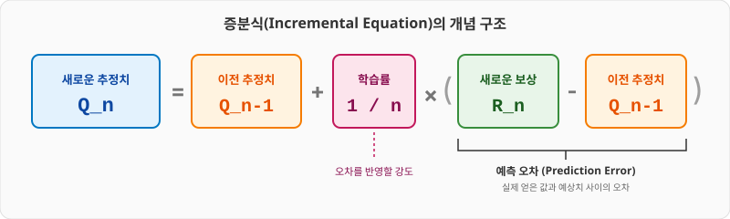
공식 속 각 부분들의 위치 관계를 좌표선 형태로 나타내면 다음과 같습니다.
그림 3-14 Qn-1, Qn, Rn의 위치 관계
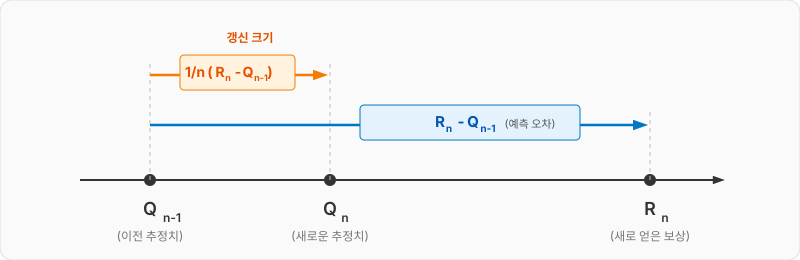
그림에서 보듯 Qn-1이 Qn으로 갱신될 때 Rn - Qn-1의 길이에 1/n을 곱한 값만큼 이동합니다.
이때 Rn 방향으로 얼마나 진행되느냐는 1/n 값이 결정하죠.
이처럼 1/n은 갱신되는 양을 조정하기 때문에 학습률learning rate 역할을 합니다.
NOTE_ 시도 횟수 n이 커질수록 1/n은 작아집니다. 시도 횟수가 늘어날수록 Qn이 갱신되는 양이 작아진다는 뜻이죠. 예를 들어 n = 1이면 1/n = 1이므로 Qn = Rn이 되어 Qn의 값은 단번에 Rn으로 갱신됩니다. 또 다른 극단적인 예로 n = ∞이면 1/n = 0이므로 Qn = Qn-1이 됩니다. 즉, Qn은 전혀 갱신되지 않습니다.
3.3.3.3 증분 구현(Incremental Implementation) 코드
이상의 수식을 바탕으로 효율적으로 동작하는 증분식 기반 표본 평균 갱신 코드를 작성하겠습니다.
import numpy as np
Q = 0.0
for n in range(1, 11):
reward = np.random.rand()
Q = Q + (reward - Q) / n # [식 3.5]
print(Q)
[식 3.5]를 구현한 부분이 Q = Q + (reward - Q) / n 코드입니다.
여기서 주의할 점은 [식 3.5]의 Qn과 Qn-1에 해당하는 변수를 모두 Q 하나로 처리한 부분입니다. 변수를 하나만 써도 되는 이유는 [그림 3-15]를 보면 알 수 있습니다.
그림 3-15 대입 연산자(=)의 오른쪽과 왼쪽에 있는 Q의 실체
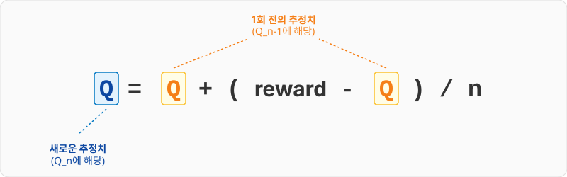
그림과 같이 대입 연산자(=) 오른쪽 of Q는 1회 이전의 추정치를 나타냅니다.
그리고 오른쪽에서 계산된 결과가 왼쪽의 Q에 새롭게 대입되는 것이죠. 따라서 변수를 하나만 사용하여 이전 추정치를 새로운 추정치로 갱신할 수 있습니다.
같은 계산을 다음과 같이 += 연산자로도 작성할 수 있습니다.
# Q = Q + (reward - Q) / n
Q += (reward - Q) / n
Q = Q + ... 처럼 변수의 값을 덮어쓰는 코드는 이와 같이 Q += ... 형태로 표현할 수 있습니다.
이상이 표본 평균을 효율적으로 구하는 방법입니다. Q1, Q2, Q3 … 식으로 하나씩 순차적으로 증가시키며 구할 수 있다는 뜻에서 이런 구현 방식을 증분 구현incremental implementation이라고도 합니다.
3.3.3 에이전트의 행동 정책
이제 플레이어(에이전트)가 가치가 가장 큰 슬롯머신을 찾기 위해 어떤 전략(정책)을 취해야 하는지 살펴보겠습니다.
3.3.3.1 탐욕 정책(Greedy Policy)
가장 직관적인 정책은 실제로 플레이하고 결과가 가장 좋은 슬롯머신을 선택하는 것입니다.
각각을 플레이해보고 가치 추정치(실제 획득한 보상의 평균)가 가장 큰 슬롯머신을 선택하는 정책이죠. 이러한 정책을 탐욕 정책greedy policy이라고 합니다.
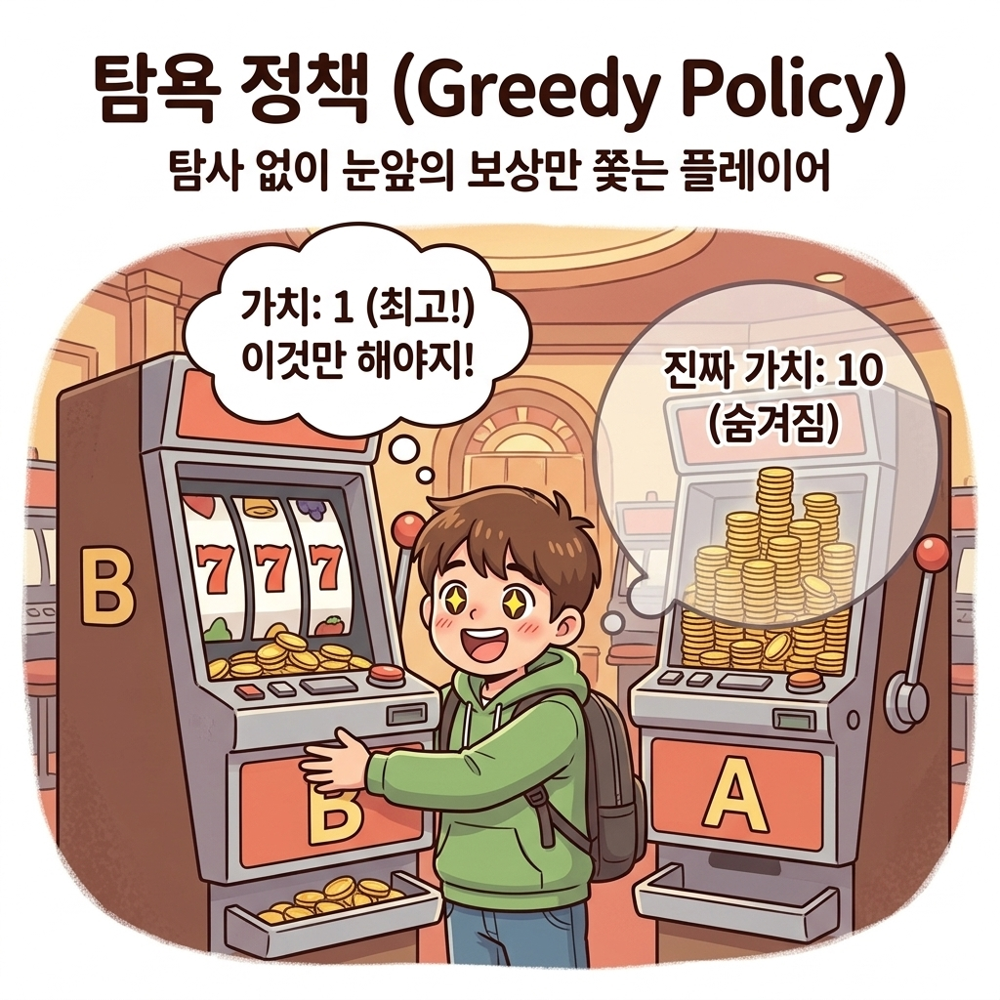
NOTE_ greedy는 ‘탐욕스럽다’라는 뜻입니다. ‘미래는 생각하지 않고 눈앞의 정보만으로 가장 좋아 보이는 수를 선택한다’라고 해석할 수 있습니다. 밴디트 문제에서 탐욕 정책이란 지금까지 플레이한 경험만으로, 즉 슬롯머신의 가치 추정치만으로 최선의 머신을 선택하는 것을 말합니다.
탐욕 정책은 좋아 보이지만 문제도 있습니다.
예를 들어 슬롯머신 a와 b를 각각 한 번씩만 플레이하는 경우를 생각해보죠. 이때 슬롯머신 a와 b의 가치 추정치는 각각 0과 1입니다. 이 상태에서 탐욕 정책에 따라 행동하면 이후로는 계속 b만 선택할 것입니다. 하지만 실제로는 a가 더 좋은 슬롯머신일 수도 있습니다.
3.3.3.2 활용(Exploitation)과 탐색(Exploration)
슬롯머신의 가치 추정치에 ‘불확실성’이 스며 있기 때문에 생기는 문제입니다.
확실하지 않은 추정치를 전적으로 신뢰하면 최선의 행동을 놓칠 수 있죠. 그래서 플레이어는 불확실성을 줄여 추정치의 신뢰도를 높여야 합니다. 여기까지 생각이 닿으면 플레이어에게 다음의 두 가지 행동을 요구하게 됩니다.
• 활용exploitation:
지금까지 실제로 플레이한 결과를 바탕으로 가장 좋다고 생각되는 슬롯머신을 플레이(탐욕 정책)
• 탐색exploration:
슬롯머신의 가치를 정확하게 추정하기 위해 다양한 슬롯머신을 시도
이 두 관계는 일상생활에서도 쉽게 비유해볼 수 있습니다.
자주 가던 맛있는 단골 맛집을 가는 것(활용)과, 완전히 새로운 음식점에 도전해보는 것(탐색) 사이의 선택 딜레마와 같습니다.
그림 3-16 활용 vs 탐색의 선택 딜레마
앞서 설명했듯이 탐욕스럽게만 행동하면 더 나은 선택을 놓칠 가능성이 있습니다. 그래서 탐욕스럽지 않은 두 번째 행동, 즉 탐색을 시도해볼 필요가 생깁니다.
탐색은 각 슬롯머신의 가치를 더욱 정확하게 추정하도록 해줍니다.
NOTE_ 활용과 탐색은 상충관계입니다. 한 번에 둘 중 하나만 선택할 수 있으므로 다른 하나를 희생해야 합니다.
밴디트 문제에서 다음 한 번의 시도만으로 좋은 결과를 얻고 싶다면 ‘활용’을 택해야 할 것입니다. 하지만 장기적인 관점에서 더 나은 결과를 얻고 싶다면 ‘탐색’이 필요합니다. 탐색을 하면 더 좋은 슬롯머신을 찾을 가능성이 높아지기 때문입니다. 더 좋은 머신을 찾는 데 성공한다면 이후로는 새로 찾은 머신을 선택하여 장기적으로 더 나은 결과를 얻을 수 있습니다.
3.3.3.3 ε-탐욕 정책(Epsilon-Greedy Policy)
강화 학습 알고리즘은 결국 ‘활용과 탐색의 균형’을 어떻게 잡느냐의 문제로 귀결됩니다.
이 균형을 맞추는 방법으로 지금까지 다양한 알고리즘이 제안되었습니다. 간단한 것부터 복잡한 것까지 정말 많지만 그중에서도 가장 기본적이고 응용하기 좋은 알고리즘은 ε-탐욕 정책epsilon-greedy policy, 엡실론-그리디 정책입니다.
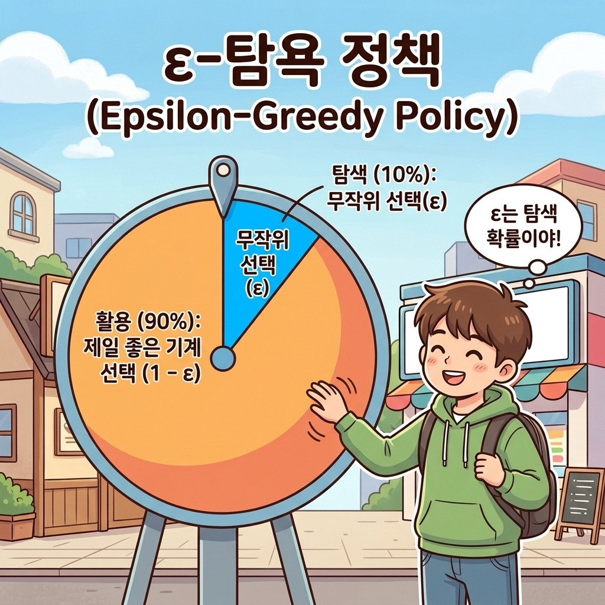
ε-탐욕 정책은 간단한 알고리즘입니다.
ε의 확률, 예컨대 ε = 0.1의 확률(10%)로 ‘탐색’을 하고 나머지는 ‘활용’을 하는 방식입니다. 탐색할 차례에서는 다음 행동을 무작위로 선택하여 다양한 경험을 쌓습니다.
이렇게 함으로써 가능한 모든 행동 각각의 가치 추정치의 신뢰도가 조금씩 높아집니다. 그리고 나머지 1 - ε의 확률로는 탐욕 행동, 즉 활용을 수행합니다.
NOTE_ ε-탐욕 정책은 현재까지 얻은 경험을 ‘활용’할 수 있습니다. 그러면서도 (가끔씩) 탐욕스럽지 않은 행동을 시도해봄으로써 더 나은 행동이 있는지 ‘탐색’합니다. 밴디트 문제에도 ε-탐욕 정책을 적용하면 효율적으로 해결할 수 있을 것입니다.
이상으로 밴디트 문제 자체와 밴디트 문제의 대표적인 해결법인 ε-탐욕 알고리즘을 설명했습니다.
다음 절에서는 지금까지 설명한 내용을 파이썬으로 구현해보겠습니다.
3.3.4 정리 및 요약
이번 절에서는 밴디트 문제를 해결하기 위한 핵심 알고리즘의 기초를 다졌습니다. 핵심 요약은 다음과 같습니다.
- 가치 추정의 원리: 플레이어는 슬롯머신의 진짜 가치(보상 기댓값)를 들여다볼 수 없는 ‘블랙박스’ 상황에 직면해 있습니다. 따라서 실제 플레이해서 나온 표본 평균값을 통해 가치를 추정해야 합니다.
-
증분 구현(Incremental Implementation): 과거 데이터를 전부 저장하고 매번 평균을 계산하려면 메모리와 계산량이 폭발합니다. 증분 공식을 사용하면 이전 추정치 Qn-1과 최신 보상 Rn, 그리고 시도 횟수 n만을 사용하여 효율적으로 새로운 평균 Qn을 갱신할 수 있습니다.
\[Q_n = Q_{n-1} + \frac{1}{n}(R_n - Q_{n-1})\] - 활용(Exploitation)과 탐색(Exploration): 눈앞의 최선의 선택을 취하는 ‘활용’과 새로운 가능성을 시험하는 ‘탐색’은 서로 상충관계(Trade-off)에 있습니다. 장기적인 수익 극대화를 위해서는 둘 사이의 균형이 필수적입니다.
- ε-탐욕 정책(ε-Greedy Policy): ε의 확률로 탐색(무작위 선택)을 수행하고, 1 - ε의 확률로 활용(탐욕 선택)을 수행하여 단순하면서도 강력하게 균형을 맞추는 정책입니다.